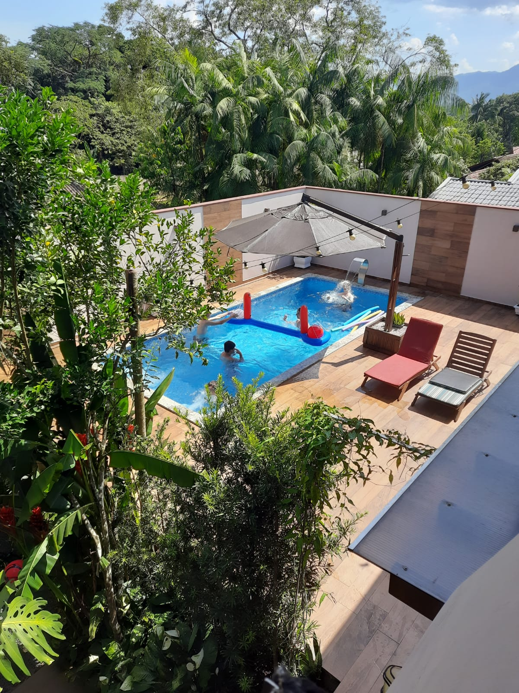

SEJA BEM VINDO AO MEU MEMORIAL
Sobre mim:
- Meu nome é Felipe Ruskowski Schroeder
- Atualmente tenho 15 anos
- Moro em Timbó/SC
- Nome do meu pai: Jonatan Schroeder
- Nome da minha mãe: Charlene Ruskowski Schroeder
- Nome da minha irmã: Camila Ruskowski Schroeder
- Tenho uma cadela chamada: Twilight
Hobbies:
- Tocar Guitarra e Violão
- Jogar Tenis de Mesa
- Jogar videogames
- Sair com os amigos
- Jogar Futebol
Localização:

Dados:
- Rua Pedro Maestri
- Bairro Imigrantes
- Número 114
- Timbó/SC
- Ponto de referencia: Indústria de Relogios Herweg
Música:
Curiosidades:
- Sou Guitarrista na Banda Docemente
- Apareci como destaque do Jornal do Médio Vale 5 vezes
- Em um intervalo de 2 dias, apareci 3 vezes na rádio atlântida
- Já toco violão e guitarra a 7 anos
- Já fui nos shows das bandas: Accusticos & Valvulados / Comunidade Nin-Jitsu / Armandinho e Banda
- Ganhei a palheta do DJ/Guitarrista Fredi Chernobyl que foi usada no show
- Já tirei foto com o Mano Changes e Fredi Chernobyl
- Já abri o evento de pascoa municipal fazendo um show no CIC
- Comprei meu primeiro violão com apenas R$ 100
Esportes:
Curiosidades:
- Já participei de diversos campeonatos de Tenis de Mesa
- Já fui Campeão Municipal no Tenis de Mesa
- Treinei Tenis de Mesa durante 4 anos
- Fiz Natação durante toda minha infancia
- Jogo futebol uma vez por semana com meus amigos
- Já fui convidado por um ex-jogador da NBA para treinar Basquete em nome da cidade de Indaial
Viagens:

Melhores Viagens que já fiz:
- Já visitei as praias mais bonitas do Brasil
- Já fui no Beach Park em Fortaleza
- Já visitei o Museu da Independecia do Brasil
- Fiquei por uma semana no centro da grande São Paulo
- Já visitei o maior museu Militar Brasileiro
Carreira:
Experiencias:
- Fui na creche Primeiros Passos
- Completei o Jardim de Infancia no Cinderela
- Formado no Ensino Fundamental pela Escola Municipal Padre Martinho Stein
- Tenho 4 anos sendo estudante do SENAI
- Tenho 3 anos de curso de Inglês na Dreams
- Cursando o Ensino Médio pelo CETISA
Ideias de Carreiras Futuras:
- Trabalhar como Músico
- Ser chefe de uma Empresa
- Ser um homem de grande relevancia
- Trabalhar em alguma área que envolva TI
Links de parceiros:
Alemão Cuca
Bork
Tavin
Cattoni
Amohr
Russelé
PIFS
Site desenvolvido por Felipe Ruskowski Schroeder ©